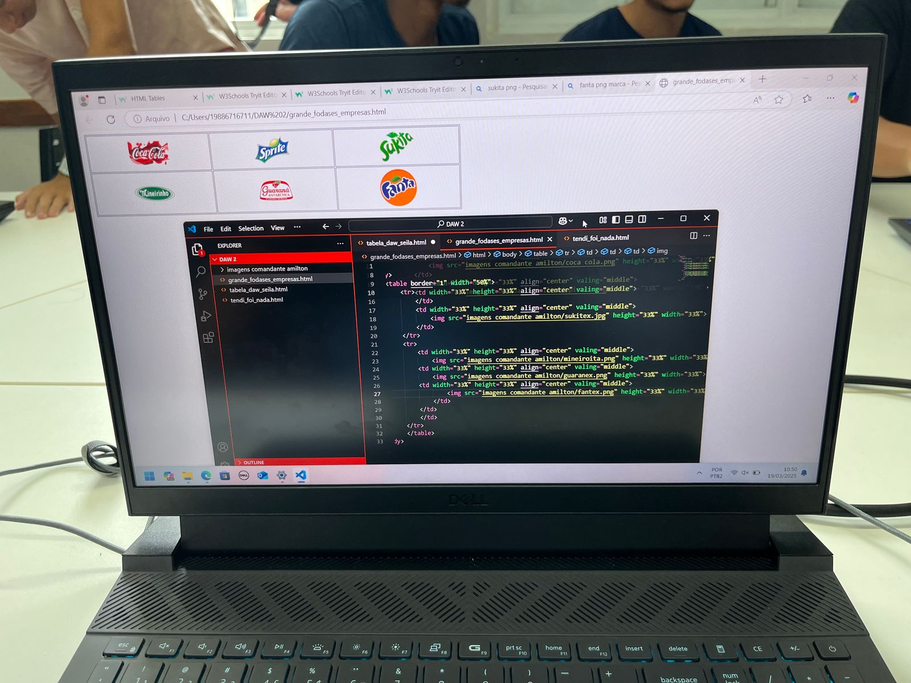
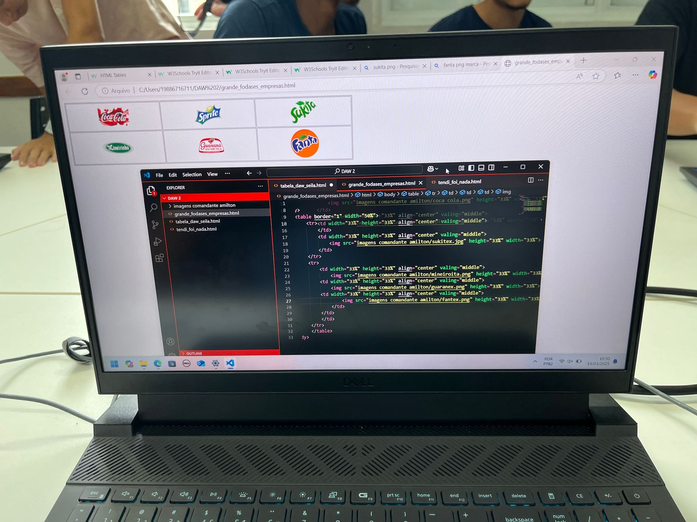
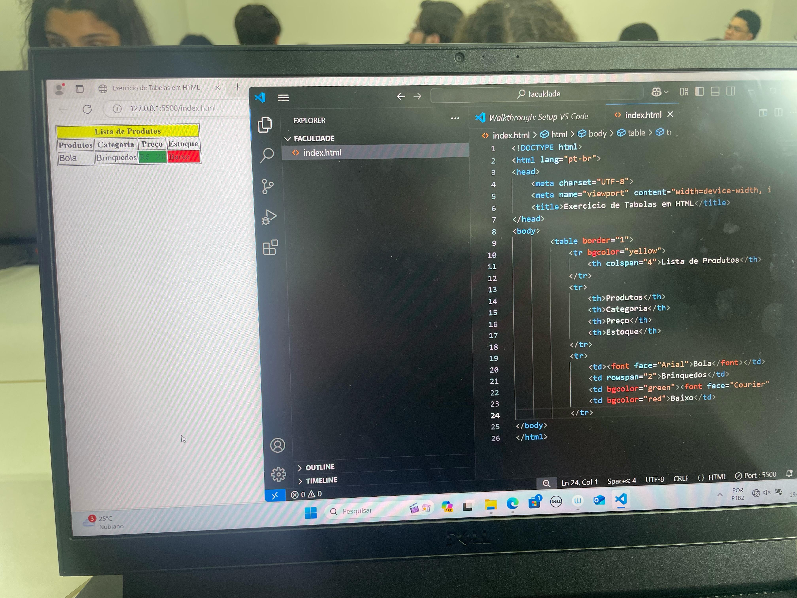
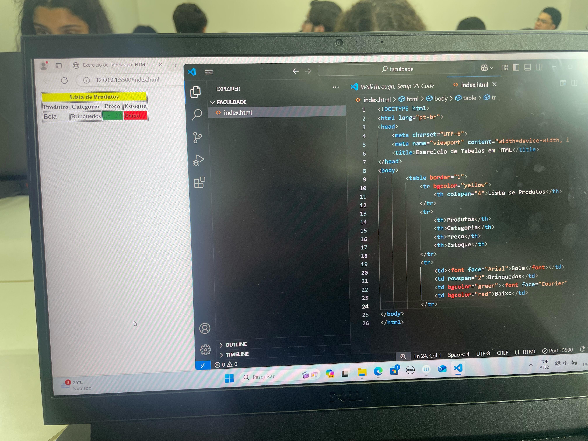

Sobre mim
Me chamo Rafael e sou estudante de Ciências da Computação na Universidade Veiga de Almeida. Atualmente, estou no primeiro período. Desenvolvi um grande interesse por computação em 2024, quando iniciei um curso de programação na Alura, onde mergulhei em diversos conteúdos e desenvolvi projetos práticos, como a criação de páginas web utilizando HTML, CSS, JavaScript e PHP.
Falando um pouco mais sobre mim: sou uma pessoa curiosa, determinada e sempre em busca de aprender algo novo. Nos momentos livres, gosto de jogar jogos online, encontrar meus amigos nos fins de semana e assistir séries ou filmes que me inspiram a pensar de forma criativa. Acredito que equilíbrio entre estudo e lazer é essencial para manter a mente sempre ativa e focada.
Tenho como meta me dedicar intensamente aos estudos para me tornar um grande profissional na área de programação e, com meu esforço, alcançar a tão sonhada independência financeira. Além disso, pretendo, junto com amigos da mesma área, desenvolver um projeto de programação que tenha grande impacto e sucesso.
Acredito no poder do trabalho em equipe e na importância de estar sempre atualizado com as novas tecnologias. Estou sempre buscando novos desafios que me tirem da zona de conforto e me ajudem a evoluir tanto pessoal quanto profissionalmente.
.jpeg)

.jpeg) 

.jpeg)
.jpeg)
 
